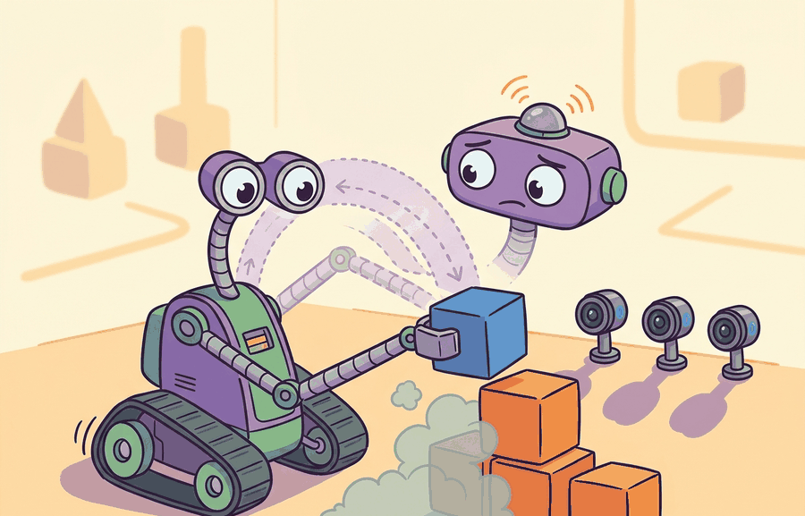

A Careful Control Loop

Rigid transforms, homogeneous coordinates, SE(3) are the formal contract for moving poses between frames without changing the object being described. A point can be measured in the camera frame, needed in the robot base frame, and commanded in the end-effector frame. SE(3) gives the robot a compositional way to say that these are the same physical point viewed through different coordinate agreements.
This section develops the technical contract for rigid transforms, homogeneous coordinates, and the Lie group SE(3). First we distinguish rotation, translation, and frame labels. Then we show how homogeneous coordinates make composition a single matrix multiplication. Finally we test one transform chain numerically so a reader can see exactly where a pose bug would enter a robot pipeline.
The key question is practical: if a camera sees a block at one coordinate, how does the robot compute the coordinate that its controller can actually use?
Theory
A rigid transform preserves distances and angles. In 3D, it combines a rotation $R \in SO(3)$ and a translation $t \in \mathbb{R}^3$. For a point $p_B$ expressed in frame $B$, the same physical point expressed in frame $A$ is
$$p_A = R_{AB}p_B + t_{AB}.$$
The subscript convention matters. Here $R_{AB}$ rotates coordinates from frame $B$ into frame $A$, and $t_{AB}$ is the origin of frame $B$ expressed in frame $A$. The transform is valid only when both frames are rigid, the units match, and the timestamp is appropriate for the motion being controlled.
Homogeneous coordinates append a final 1 to a point so rotation and translation can be composed by one matrix:
$$T_{AB} = \begin{bmatrix} R_{AB} & t_{AB} \\ 0\ 0\ 0 & 1 \end{bmatrix}, \qquad \bar p_A = T_{AB}\bar p_B.$$
The useful payoff is composition. If a camera frame $C$ is attached to a wrist frame $W$, and the wrist is attached to the robot base frame $B$, then $T_{BC} = T_{BW}T_{WC}$. Matrix order encodes the path through the frame graph. Reversing the order usually produces a plausible-looking number with the wrong physical meaning.
SE(3) is not just a storage format for pose. It is a group: transforms compose, have an identity, and have inverses. Those properties let a robot validate frame chains with identity checks such as $T_{AB}T_{BA}=I$ before a learned policy or controller sees the result.
Worked Example
Consider a wrist camera that detects a block at $(0.30, 0.10, 0.20)$ meters in the camera frame. The transform below converts that point into the robot base frame. Code Fragment 4.4.1 keeps the numbers small enough to check by hand: the camera is offset 0.50 meters forward and 0.25 meters upward from the wrist, and the wrist is 1.00 meter above the base.
# Compose two SE(3) transforms and apply them to one detected point.
# The final identity check catches inverted transform order or bad inverses.
# All distances are meters and all matrices use column-vector convention.
import numpy as np
def make_transform(rotation, translation):
transform = np.eye(4)
transform[:3, :3] = np.array(rotation, dtype=float)
transform[:3, 3] = np.array(translation, dtype=float)
return transform
base_from_wrist = make_transform(np.eye(3), [0.0, 0.0, 1.0])
wrist_from_camera = make_transform(np.eye(3), [0.5, 0.0, 0.25])
base_from_camera = base_from_wrist @ wrist_from_camera
point_camera = np.array([0.30, 0.10, 0.20, 1.0])
point_base = base_from_camera @ point_camera
round_trip = np.linalg.inv(base_from_camera) @ point_base
print("base point:", point_base[:3].round(3).tolist())
print("round trip:", round_trip[:3].round(3).tolist())base_from_wrist and wrist_from_camera, then applies the resulting base_from_camera transform to one detected point. The round-trip check confirms that the inverse returns the point to the original camera coordinates.Expected output: the base-frame point is shifted by the two translations, while the round-trip output returns to the original camera measurement. If the round trip fails, debug transform order, units, and frame labels before changing perception or control code.
The hand-built fragment keeps frame semantics visible. In production, SciPy Rotation handles rotation representations, ROS 2 tf2 keeps a time-buffered frame tree, spatialmath-python gives compact pose algebra, Drake exposes typed rigid transforms, and OpenCV calibration anchors camera intrinsics and extrinsics. The shortcut removes boilerplate, but the hand-built version remains the debugging oracle.
- Silent direction inversion. Writing
base_from_camerawhen you meantcamera_from_baseproduces a plausible number with the wrong physical meaning. The round-trip identity check (T @ T_inv == I) catches this before the controller sees it. - Unit mismatch at composition. Mixing meters and millimeters between edges produces translation offsets that are 1000x wrong. Store the unit as a field, not a comment.
- Stale transform. A camera running at 30 Hz may return a tf lookup from 50 ms ago to a controller running at 200 Hz. tf2 lookup time must equal the sensor timestamp, not the current wall time.
- Non-orthogonal rotation. Accumulated floating-point error in long chains can make $R^\top R \neq I$. Renormalize or use the
scipy.spatial.transform.RotationSLERP path, which enforces the group structure.
SE(3) is a group: $T_{AB} T_{BA} = I$ is a property you can test in one line of code. If the round-trip fails, the bug is in the transform chain, not in perception or control.
Classical SE(3) computation treats each transform as exact. Current research relaxes this: uncertainty-aware transforms carry a covariance over pose (see GTSAM factor graphs and the Manif library for Lie-group uncertainty propagation), enabling robots to reason about whether a transform is precise enough to grasp, not merely whether it is defined. Autodifferentiation through SE(3) operations (used in trajectory optimization via CasADi or Pinocchio) is a second active direction, because learned policies trained end-to-end need gradients through the frame chain.
SE(3) bugs arise when rotation, translation, and composition order are mixed. Check inverse, composition, and point-transformation by hand before trusting a transform tree.
Section References
Murray, R. M., Li, Z., and Sastry, S. S. "A Mathematical Introduction to Robotic Manipulation." CRC Press, 1994. https://www.cds.caltech.edu/~murray/mlswiki/
The standard reference for SE(3), screws, and twists in robotics. Chapter 2 derives the homogeneous-coordinate representation used here.
Lynch, K. M., and Park, F. C. "Modern Robotics: Mechanics, Planning, and Control." Cambridge University Press, 2017. http://modernrobotics.org
Covers SE(3) and its Lie algebra se(3) (twists and wrenches) with accompanying Python and MATLAB code; the notation here follows this book's convention.
Foote, T. "tf: The transform library." IEEE Conference on Technologies for Practical Robot Applications (TePRA), 2013.
The original paper describing the ROS tf system: time-buffered transform trees, parent-child conventions, and the lookup API that became tf2.
Build a three-link transform chain: world to shoulder (translate 0 m, 0 m, 1 m), shoulder to elbow (translate 0.4 m forward, rotated 45° around the z-axis), elbow to gripper (translate 0.3 m forward). Compose the three $T$ matrices to get $T_{\text{world},\text{gripper}}$, then verify the round-trip: $T_{\text{world},\text{gripper}} \cdot T_{\text{world},\text{gripper}}^{-1} = I_{4\times 4}$. Report the gripper position in world coordinates and explain what breaks if you apply the rotation matrix to the translation offset in the wrong order.